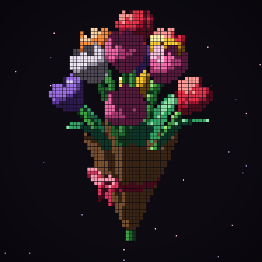
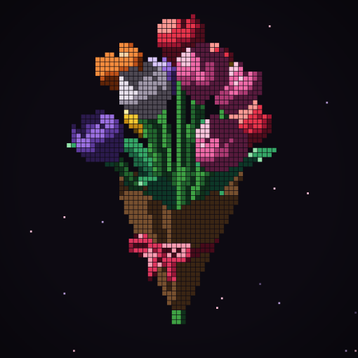
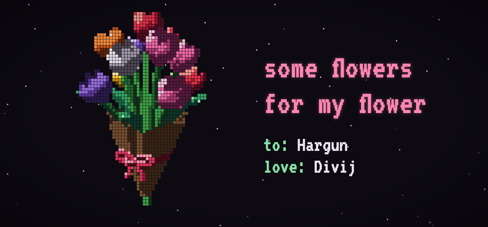
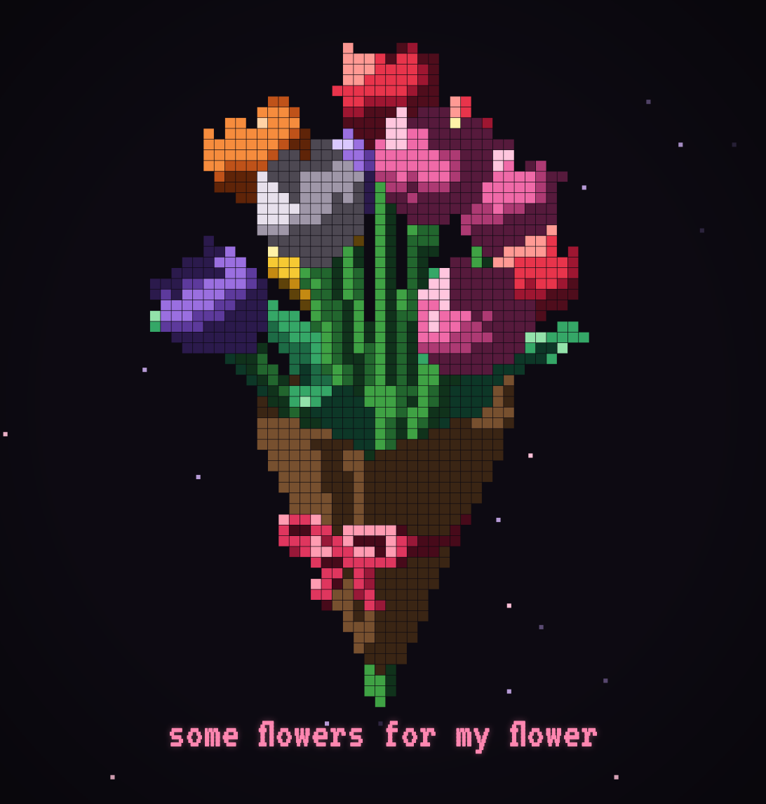

put your flowers on your phone
two minutes, no tech skills needed
1. the app icon
An icon on your home screen that opens the spinning bouquet full screen.
- Open this website in Safari (the compass app).
- Tap the Share button (the square with the arrow pointing up).
- Scroll down and tap Add to Home Screen, then Add.
2. the widget
A bouquet that sits on your home screen all day and slowly turns: a new angle every 15 minutes.


- Get the free app Scriptable from the App Store.
- Tap this button to copy the flower code:
- Open Scriptable, tap the + in the top corner, tap the empty page, and Paste.
- Tap the title at the top, rename it Flowers, then tap Done.
- Go to your home screen. Press and hold an empty spot until the apps wiggle, then tap Edit (or the +) and choose Add Widget.
- Search for Scriptable, pick a size (the wide one shows your message), and tap Add Widget.
- Press and hold the new widget, tap Edit Widget, and set Script to Flowers. Tap outside to finish.
loading…
3. or just a picture
No app needed. Press and hold the picture, tap Save to Photos, and use it as a wallpaper or in the Photos widget.
